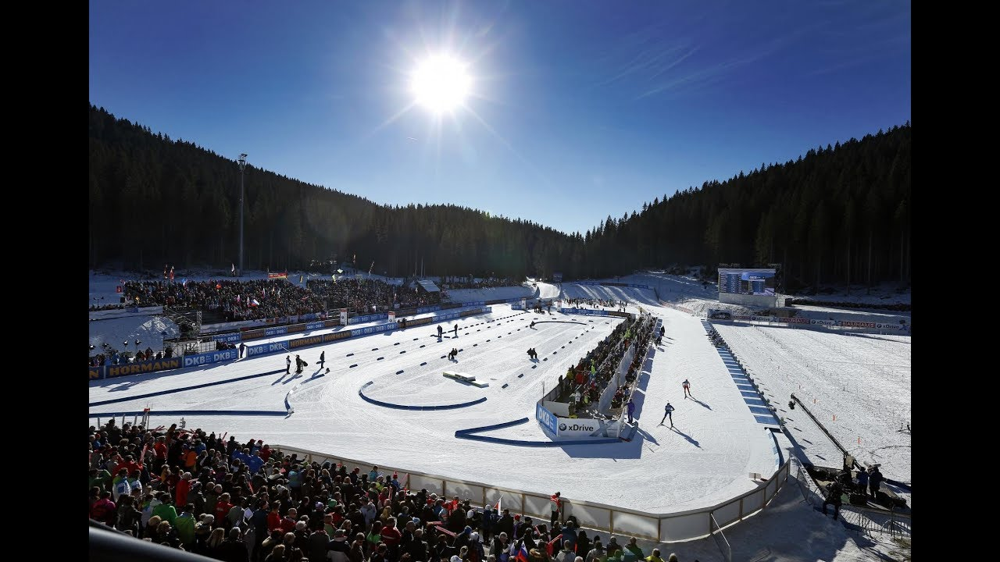
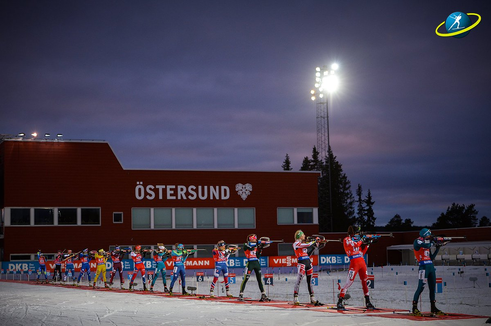
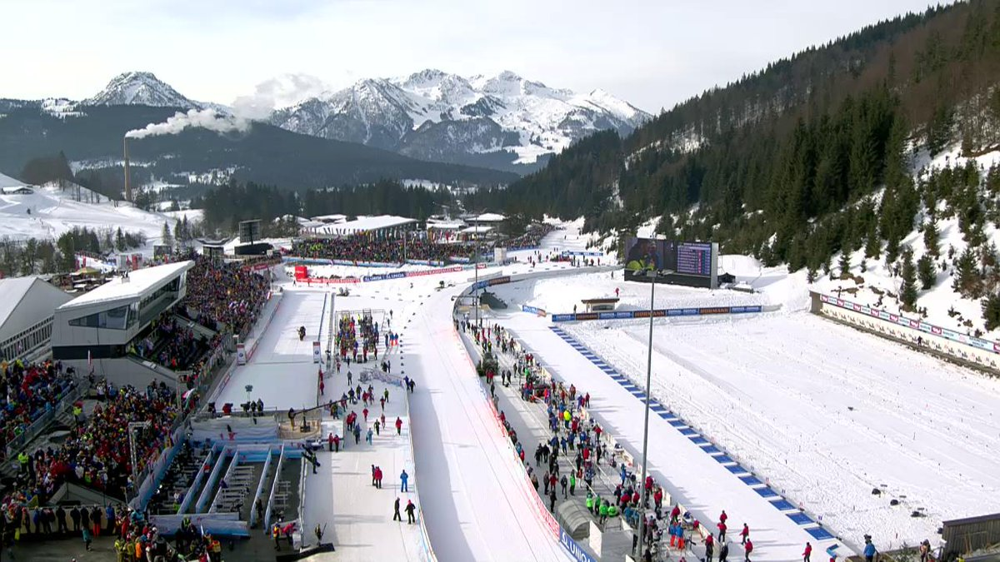

Биатлон: Кубок мира 2021/2022
Расписание
Медальный зачёт Кубка мира
Лидеры сезона
Личный кабинет
Новости
  
Этап 1 - Эстерсунд (SWE)
Этап 2 - Эстерсунд (SWE)
Этап 3 - Хохфильцен (AUT)
Этап 1 - Эстерсунд (SWE)
27.11
Женщины, 15 км, индивидуальная гонка - 13:45
Мужчины, 20 км, индивидуальная гонка - 15:00
28.11
Женщины, 7.5 км, спринт - 13:00
Мужчины, 10 км, спринт - 17:45
Этап 2 - Эстерсунд (SWE)
02.12
Женщины, 7.5 км, спринт - 15:45
Мужчины, 10 км, спринт - 18:30
04.12
Женщины, 4x6 км, эстафета - 14:35
Мужчины, 4x7.5 км, эстафета - 17:15
Этап 3 - Хохфильцен (AUT)
10.12
Мужчины, 10 км, спринт - 13:25
Женщины, 7.5 км, спринт - 16:15
11.12
Мужчины, 12.5 км, гонка преследования - 14:15
Женщины, 4x6 км, эстафета - 16:15
12.12
Мужчины, 4x7.5 км, эстафета - 13:45
Женщины, 10 км, гонка преследования - 16:30